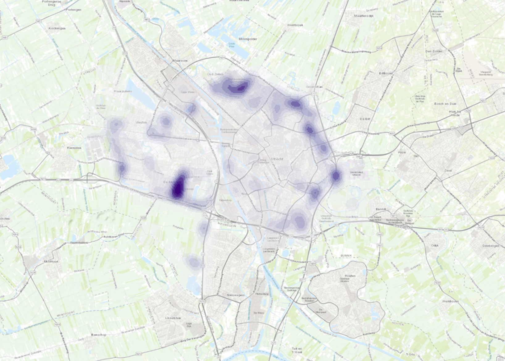
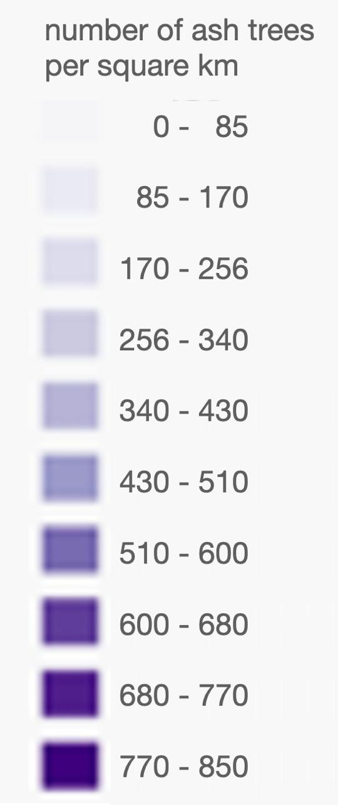

Vector Operations
Kernel density map of ash trees in Utrecht (2024)
|  |  |
This is a kernel relative density map of ash trees in Utrecht. Kernel maps are usually used for identifying trends and can be useful in for example epidimiology. This map depicting only Ash trees shows us where in the city there are many ash trees. This can be useful for people with allergies for that certain tree, identifying the possible spread of specific tree diseases, and for predicting where certain animal species may be spotted.
From this map you can see that ash trees are not evenly distributed over Utrecht, which tells us these trees are probably planted in Clusters, by for example governmental institutions, presumably for the sake of efficiency and low costs.
The map was created in ArcGIS Pro.
Tree data owned by the municipality of Utrecht were used. These data were uploaded to the map as a hosted feature layer, meaning that ArcGIS online hosts the layer and the data for accessibility purposes. Data of the boundaries of Utrecht were uploaded to the map as a Web Feature Service (WFS) layer owned by the Municipality of Utrecht. In essence, a WFS layer is a read-only version of a hosted feature layer.
Both imported layers are web feature layers, which cannot be edited in itself without ownership of the layers. That is why a duplicate of the tree data was used to create this map
using the Geoprocessing Tool named "Select Layer By Attribute": this enabled me to select only ash trees, and then I created a layer out of this selection of trees (attributes) using the "Export Features" Tool.
I analysed this new layer using a Kernel density Analysis Tool. This enabled me to show the point data (single trees) in a different manner.
All units of measure were set to metric system units such as kilometer, so that there is no confusion in interpreting the map.